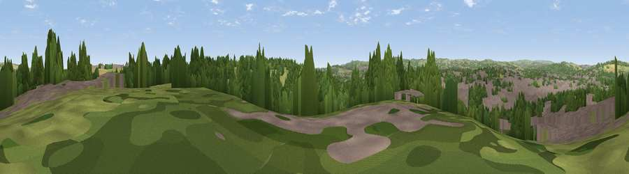

Viewpoint near Tapton
#35498 in England · top 70% of its area beats it · near TaptonWhere it is
The exact computed spot (SK 39325 72275). Click the marker for map links.
The view, rendered

A 360° render of this exact spot computed from the terrain model, tree cover and land cover — summer colours, afternoon light, calibrated against photographs of famous viewpoints. Real trees, hedges and buildings will differ in detail.
The panorama
Grey silhouette: terrain skyline in each direction (720 bearings, Earth curvature and refraction included). Dashed green: skyline with trees (+15 m) and buildings (+8 m) as obstacles. Blue strip: how far the ground is visible on each bearing.
Where the view opens
Wedge length = distance to the farthest visible ground on that bearing (vegetation-aware). Rings at 10, 25 and 50 km.
What fills the view
36% built-up · 31% woodland · 26% grassland · 8% cropland
Angular shares of the visible panorama (visual magnitude), not map area. Landscape diversity 0.56 (0–1 Shannon).
Key numbers
More beautiful places nearby
The staircase of upgrades: each row has a higher view potential than everything closer. Driving times are estimates from straight-line distance, calibrated against real road routing — check an actual route before setting out.
| Place | Direction | Drive | Score |
|---|---|---|---|
| Viewpoint near Hady | S · 2 km | ~5 min | 35.5 |
| Viewpoint near Calow | SE · 3 km | ~7 min | 44.3 |
| Viewpoint near Hundall | N · 4 km | ~10 min | 54.1 |
| Viewpoint near Holymoorside | SW · 6 km | ~13 min | 54.5 |
| Viewpoint near Apperknowle | NNW · 7 km | ~14 min | 55.3 |
| Viewpoint near Bolsover | E · 8 km | ~16 min | 60.4 |
| Viewpoint near Alton | SSW · 9 km | ~18 min | 67.0 |
| Viewpoint near Alton | SSW · 9 km | ~18 min | 67.7 |
53.24604, -1.41214 · source: screening · position refined by local search. Computed location — check access rights before visiting.